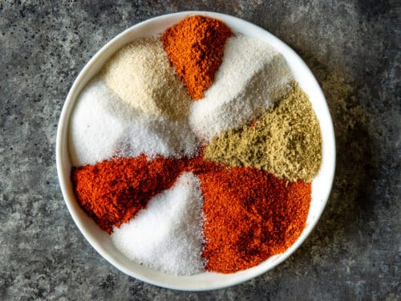

Fajita Seasoning

Description
This is a great recipe to make your own fajita seasoning for chicken or beef fajitas. No bouillon cubes means this is perfect for vegetarians too! Make up a larger batch and store in an airtight container for future use.
Ingredients
- 1 tablespoon cornstarch
- 2 teaspoons chili powder
- 1 teaspoon salt
- 1 teaspoon ground paprika
- 1 teaspoon white sugar
- 1/2 teaspoon onion powder
- 1/2 teaspoon garlic powder
- 1/2 teaspoon ground cumin
- 1/4 cayenne pepper
Steps
- Gather all ingredients.
- Stir cornstarch, chili powder, salt, paprika, sugar, onion powder, garlic powder, cumin, and cayenne pepper together in a small bowl.
- Use immediately or store in an airtight container for later use.